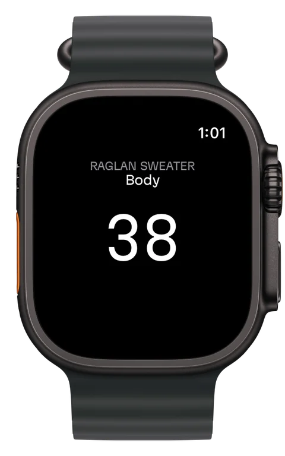
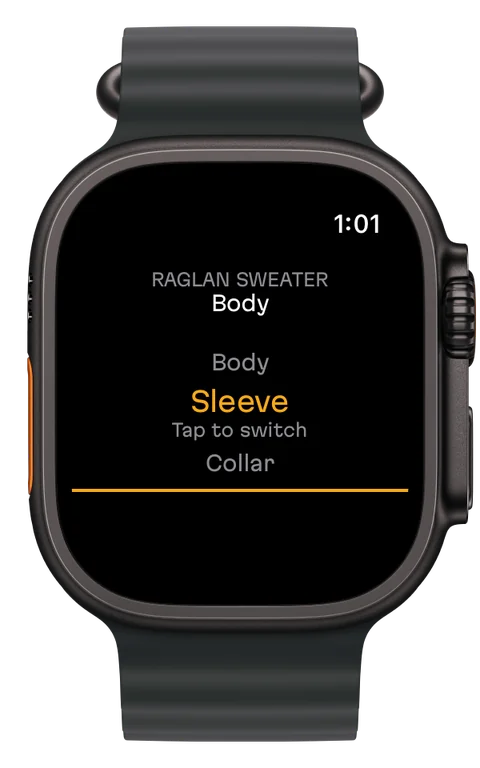
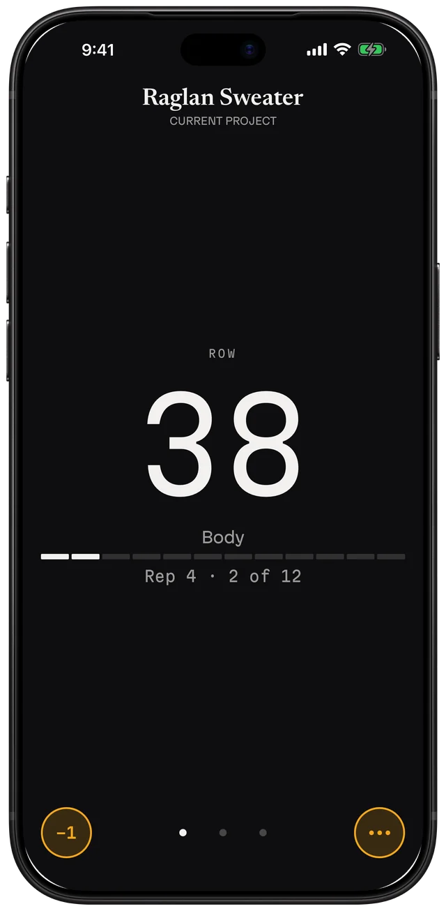
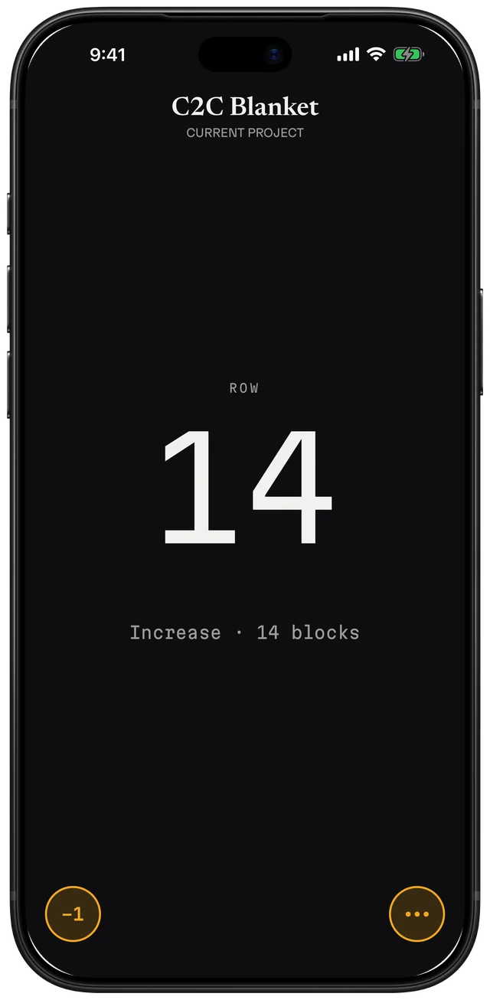
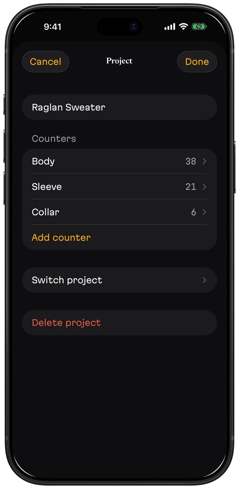

Knitting & crochet row counter
Count rows on your wrist. Keep your eyes on the stitches.
Picot counts rows on your Apple Watch and your iPhone, even when your phone is in another room.
Free to start. Picot Pro is a one-time purchase.


Count on your wrist
- Tap anywhere on your Watch to add a row.
- Press and hold until the ring closes to take one off.
- Turn the Digital Crown to pick a counter, then tap to confirm.
- Add Picot to your watch face: one tap opens it, and the larger slot shows your current row.
- Your Watch counts on its own, even if your iPhone is far away or off. When they're back together they catch up, and every tap adds up.

Made for people who knit and crochet seriously



- One large number you can read at a glance.
- Your pattern, right above your count (Pro). Attach the PDF, drag the line to the row you're on, and tap to count without leaving the page.
- Row alerts (Pro). Set a note for any row, like "decrease" or "change color", and Picot shows it when you get there. Count on the Watch and it taps your wrist.
- A counter for each piece (Pro). Body, sleeves, collar.
- Repeat counter (Pro). Set it to every N rows and Picot shows which repeat you're on and where you are in it.
- Corner to corner (Pro). Picot tells you when to increase or decrease and how many blocks the row has. Plan a C2C piece with the free calculator.
Picot does one thing
Most knitting and crochet apps are suites: patterns, yarn stash, community, a counter somewhere inside. Picot is only the counter, built to never lose the count.
What Picot is
- A row counter for iPhone and Apple Watch
- Every tap saved instantly
- Deleted projects and counters kept 30 days in the trash
- Backups you keep in Files, iCloud Drive or email
- Export of your projects and row counts to a file
What Picot isn't
- A pattern library or a yarn stash
- A social network
- An account you sign in to
- A subscription
- An app with ads
Free and Pro
| Feature | Free | Picot Pro |
|---|---|---|
| Apple Watch app and watch face complication | Yes | Yes |
| Projects | 1 | Unlimited |
| Counters per project | 1 | Unlimited |
| Repeat and corner-to-corner counters | — | Yes |
| PDF pattern above your count | — | Yes |
| Row alerts | — | Yes |
| Backup, restore, trash and export | Yes | Yes |
| Price | Free | One-time purchase. US$13.99 in the US; prices vary by country. |
Picot Pro can be shared with your family through Family Sharing.
Questions
Does the Apple Watch need my iPhone nearby?
No. Your Watch counts on its own, even if your iPhone is far away or off. When they're back together, they catch up on their own, and every tap adds up.
Is Picot a subscription?
No. Picot is free to start with one project and one counter, Apple Watch included. Picot Pro is a one-time purchase. There are no ads and no account.
Do I need an Apple Watch?
No. Picot works the same on iPhone alone. The Watch adds counting from your wrist.
Is it for knitting or crochet?
Both. Picot counts rows for knitting needles and crochet hooks, and includes repeat and corner-to-corner counters in Picot Pro.
Can I back up my projects?
Yes. Save a backup to Files, iCloud Drive or email and restore it on any iPhone. Restoring never deletes what you already have. PDF patterns stay on the iPhone where you added them.
Does Picot collect my data?
No. Picot has no account and no sign-in, and it collects no data.